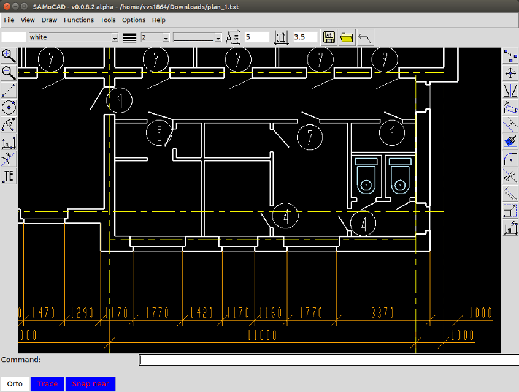
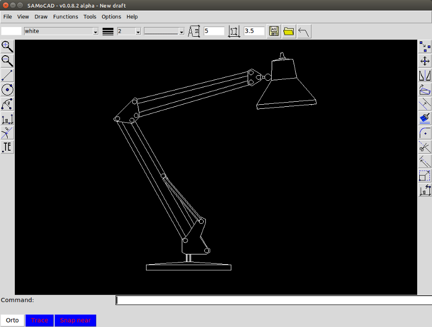

SAMoCAD - проект чертежной (CAD) программы с открытым исходным кодом. Программа работает на Windows и Linux операционных системах, имеет интерфейс приближенный к AutoCAD.
SAMoCAD предназначен для создания несложных чертежей с учетом требований СПДС, в первую очередь для строительных чертежей. Разработка программы далеко не завершена, но в ней уже можно чертить. Имеется частичная поддержка DXF формата, на данный момент почти все начерченное в программе можно сохранять в него и открывать файлы в AutoCAD и других САПР. И наоборот - импортировать созданные в других программах простые чертежи в SAMoCAD.
